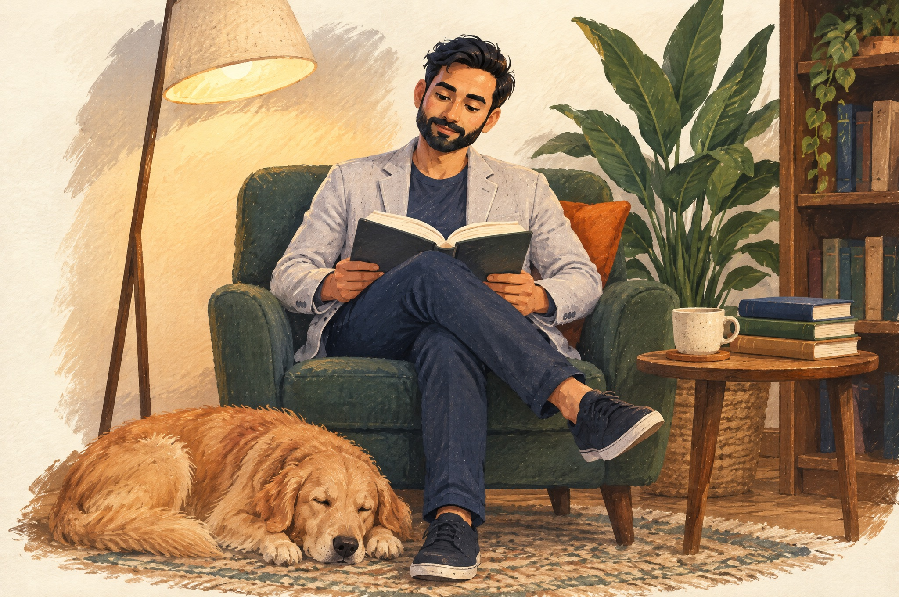

<title>TeachSpark · Tushar Pathak</title>
<link rel="preconnect" href="https://fonts.googleapis.com">
<link rel="preconnect" href="https://fonts.gstatic.com" crossorigin>
<link rel="stylesheet" href="https://fonts.googleapis.com/css2?family=Fraunces:opsz,wght,SOFT@9..144,400..700,0..100&family=Inter:wght@400;500;600&family=Caveat:wght@400;600&display=swap">
<style>
  /* ---------- tokens (single paper world; painted explicitly) ---------- */
  :root {
    --paper: #F7F1E7;
    --ivory: #FBF7EF;
    --paper-2: #EFE7D8;
    --navy: #0D1735;
    --navy-2: #2E3854;
    --ink-soft: #5A6178;
    --rust: #B64927;
    --terracotta: #92381F;
    --forest: #214F43;
    --green-2: #496D58;
    --steel: #63799E;
    --note: #EEDCA9;
    --kraft: #D7BE93;
    --line: rgba(13, 23, 53, .12);
    --shadow-paper: 0 1px 2px rgba(13,23,53,.08), 0 10px 24px -12px rgba(13,23,53,.22);
    --display: "Fraunces", "Iowan Old Style", Georgia, serif;
    --body: "Inter", system-ui, -apple-system, "Segoe UI", sans-serif;
    --hand: "Caveat", "Segoe Print", "Bradley Hand", cursive;
    --gutter: clamp(16px, 4vw, 56px);
    --max: 1360px;
  }

  * { box-sizing: border-box; }
  body {
    margin: 0;
    background: var(--paper);
    color: var(--navy);
    font-family: var(--body);
    font-size: 16px;
    line-height: 1.6;
    -webkit-font-smoothing: antialiased;
    overflow-x: hidden;
    position: relative;
  }
  /* paper grain: two faint noise layers, very low opacity */
  body::before {
    content: "";
    position: fixed; inset: 0; pointer-events: none; z-index: 0;
    background-image:
      radial-gradient(rgba(13,23,53,.035) .6px, transparent .7px),
      radial-gradient(rgba(146,56,31,.03) .5px, transparent .6px);
    background-size: 7px 7px, 11px 11px;
    background-position: 0 0, 3px 5px;
    opacity: .9;
  }
  a { color: inherit; text-decoration: none; }
  img { max-width: 100%; display: block; }
  h1, h2, h3 { margin: 0; font-family: var(--display); font-weight: 500; line-height: 1.02; letter-spacing: -.015em; text-wrap: balance; }
  p { margin: 0; }
  .hand { font-family: var(--hand); font-weight: 600; line-height: 1.15; }
  .eyebrow { font-size: 12px; font-weight: 600; letter-spacing: .14em; text-transform: uppercase; color: var(--navy-2); }
  .eyebrow .dot { color: var(--rust); margin: 0 .4em; }
  .wrap { max-width: var(--max); margin-inline: auto; padding-inline: var(--gutter); position: relative; z-index: 1; }
  :focus-visible { outline: 2px solid var(--rust); outline-offset: 3px; border-radius: 4px; }
  .sr-only { position: absolute; width: 1px; height: 1px; overflow: hidden; clip: rect(0 0 0 0); white-space: nowrap; }

  /* ---------- header ---------- */
  .header {
    position: sticky; top: env(safe-area-inset-top, 0px); z-index: 20;
    background: color-mix(in srgb, var(--paper) 86%, transparent);
    backdrop-filter: blur(10px); -webkit-backdrop-filter: blur(10px);
    border-bottom: 1px solid transparent;
  }
  .header.scrolled { border-bottom-color: var(--line); }
  .header .wrap { display: grid; grid-template-columns: auto 1fr auto; align-items: center; gap: 24px; padding-block: 14px; }
  .brand { display: flex; align-items: center; gap: 12px; }
  .brand svg { width: 40px; height: 40px; flex: none; }
  .brand .name { font-size: 13px; font-weight: 600; letter-spacing: .12em; text-transform: uppercase; line-height: 1.1; display: block; }
  .brand .sub { font-family: var(--hand); font-size: 17px; font-weight: 400; color: var(--navy-2); line-height: 1; margin-top: 2px; display: block; }
  .nav { display: flex; justify-content: center; gap: clamp(18px, 3vw, 36px); font-family: var(--display); font-size: 18px; font-weight: 500; }
  .nav a { position: relative; padding-block: 4px; }
  .nav a[aria-current="page"]::after, .nav a:hover::after {
    content: ""; position: absolute; left: -2px; right: -2px; bottom: -2px; height: 6px;
    background: url("data:image/svg+xml;utf8,<svg xmlns='http://www.w3.org/2000/svg' viewBox='0 0 60 6' preserveAspectRatio='none'><path d='M1 4 C 12 1, 22 5, 32 3 S 50 1, 59 3' fill='none' stroke='%230D1735' stroke-width='2' stroke-linecap='round'/></svg>") center/100% 100% no-repeat;
  }
  .nav a:hover::after { opacity: .45; }
  .nav a[aria-current="page"]:hover::after { opacity: 1; }
  .pill {
    display: inline-flex; align-items: center; gap: 8px; padding: 10px 20px; border-radius: 999px;
    background: var(--navy); color: var(--ivory); font-family: var(--hand); font-size: 20px; font-weight: 600; line-height: 1;
    box-shadow: 0 6px 14px -8px rgba(13,23,53,.5);
    transition: transform .18s ease;
  }
  .pill:hover { transform: translateY(-1px); }
  .menu-btn { display: none; }

  /* ---------- buttons ---------- */
  .cta-row { display: flex; flex-wrap: wrap; gap: 12px; align-items: center; }
  .btn { display: inline-flex; align-items: center; gap: 10px; padding: 12px 22px; border-radius: 999px; font-family: var(--hand); font-size: 22px; font-weight: 600; line-height: 1; transition: transform .18s ease, box-shadow .18s ease; }
  .btn-primary { background: var(--rust); color: var(--ivory); box-shadow: 0 8px 18px -10px rgba(146,56,31,.7); }
  .btn-primary:hover { transform: translateY(-1px); box-shadow: 0 12px 22px -10px rgba(146,56,31,.8); }
  .btn-secondary { background: var(--ivory); color: var(--navy); border: 1.5px solid var(--line); font-family: var(--body); font-size: 15px; font-weight: 500; }
  .btn-secondary:hover { border-color: var(--navy-2); }
  .btn-secondary svg { width: 16px; height: 16px; }

  /* ---------- torn paper transitions ---------- */
  .torn { position: relative; }
  .torn-top { display: block; width: 100%; height: 44px; margin-bottom: -1px; }
  .torn-top path { fill: var(--paper-2); }

  /* ---------- shared paper objects (verbatim from home.html) ---------- */
  .tape { position: absolute; width: 96px; height: 26px; top: -12px; left: 50%; transform: translateX(-50%) rotate(-3deg);
    background: rgba(215,190,147,.55); border: 1px solid rgba(146,56,31,.08);
    box-shadow: 0 1px 1px rgba(13,23,53,.05) inset; }
  .tape.l { left: 34px; transform: rotate(-9deg); }
  .tape.r { left: auto; right: 24px; transform: rotate(7deg); }
  .sketch { border: 1.5px solid rgba(13,23,53,.25); border-radius: 6px; padding: 14px; margin-top: 4px; display: grid; gap: 10px; background: repeating-linear-gradient(0deg, transparent 0 27px, rgba(99,121,158,.16) 27px 28px); }
  .sketch .row { display: flex; flex-wrap: wrap; align-items: center; gap: 10px; }
  .sketch .box { border: 1.5px solid var(--navy-2); border-radius: 3px; padding: 4px 10px; font-family: var(--hand); font-size: 17px; background: var(--ivory); transform: rotate(-.4deg); }
  .sketch .box.acc { border-color: var(--rust); color: var(--rust); }
  .sketch .box.grn { border-color: var(--forest); color: var(--forest); }
  .sketch .arr { font-family: var(--hand); font-size: 20px; color: var(--ink-soft); }
  .sketch .arr.in { margin-left: 24px; }
  .sticky {
    position: absolute; padding: 14px 16px; width: 168px; background: var(--note); color: var(--navy);
    font-family: var(--hand); font-size: 19px; line-height: 1.2; box-shadow: 0 8px 14px -8px rgba(13,23,53,.35); transform: rotate(4deg);
  }
  .sticky.bl { left: -28px; bottom: -22px; transform: rotate(-5deg); width: 156px; }
  .sticky.tr { right: -22px; top: 18px; background: var(--kraft); }
  .notebook { position: relative; background: var(--ivory); border-radius: 3px 10px 10px 3px; box-shadow: var(--shadow-paper); padding: 30px 30px 26px 54px;
    background-image: repeating-linear-gradient(0deg, transparent 0 31px, rgba(99,121,158,.18) 31px 32px); transform: rotate(.5deg); }
  .notebook::before { content: ""; position: absolute; left: 36px; top: 0; bottom: 0; width: 1.5px; background: rgba(182,73,39,.45); }
  .notebook .holes { position: absolute; left: 12px; top: 22px; bottom: 22px; display: flex; flex-direction: column; justify-content: space-between; }
  .notebook .holes i { width: 11px; height: 11px; border-radius: 50%; background: var(--paper-2); box-shadow: inset 0 1px 2px rgba(13,23,53,.25); }
  .notebook .prompt { font-family: var(--hand); font-size: 22px; color: var(--navy-2); }
  .postcard { position: relative; background: var(--ivory); padding: 22px 24px 24px; box-shadow: var(--shadow-paper); transform: rotate(1.5deg); border-radius: 3px; display: grid; gap: 12px; }
  .postcard .stamp { position: absolute; top: 14px; right: 14px; width: 54px; height: 64px; border: 2px dashed var(--kraft); display: grid; place-items: center; font-family: var(--hand); font-size: 16px; color: var(--green-2); transform: rotate(6deg); background: var(--paper-2); }
  .postcard .row { display: grid; grid-template-columns: 82px 1fr; gap: 12px; align-items: baseline; font-size: 15px; }
  .postcard .row span { font-family: var(--hand); font-size: 19px; color: var(--ink-soft); }
  .postcard .row a { color: var(--navy); border-bottom: 1px solid var(--line); word-break: break-all; }
  .postcard .row a:hover { color: var(--rust); border-color: var(--rust); }
  .footer .wrap { border-top: 1px solid var(--line); padding-block: 22px 36px; display: flex; flex-wrap: wrap; gap: 10px 24px; justify-content: space-between; font-size: 13px; color: var(--ink-soft); }
  .footer .hand { font-size: 18px; color: var(--navy-2); font-weight: 400; }

  /* =====================================================================
     PAGE-SPECIFIC — /work/teachspark
     ===================================================================== */

  /* reading progress (the live site has a ProgressBar) */
  .progress { position: absolute; left: 0; bottom: -1px; height: 3px; width: 100%; background: var(--rust); transform: scaleX(0); transform-origin: left; pointer-events: none; }

  /* ---------- case-study header ---------- */
  .cs-head { position: relative; z-index: 1; }
  .cs-head .wrap {
    display: grid; grid-template-columns: minmax(0, 56fr) minmax(0, 44fr); gap: clamp(28px, 5vw, 72px);
    align-items: center; padding-block: clamp(24px, 4vw, 48px) clamp(84px, 9vw, 130px);
  }
  .cs-copy { display: grid; gap: 20px; max-width: 620px; }
  .crumb { font-size: 13px; color: var(--ink-soft); display: flex; gap: 10px; align-items: center; }
  .crumb a { border-bottom: 1px solid var(--line); }
  .crumb a:hover { color: var(--rust); border-color: var(--rust); }
  .cs-copy h1 { font-size: clamp(52px, 6.4vw, 92px); font-variation-settings: "opsz" 144, "SOFT" 30; }
  .cs-copy .lead { font-size: 19px; line-height: 1.5; color: var(--navy-2); max-width: 44ch; }
  .meta { display: flex; flex-wrap: wrap; gap: 10px 20px; align-items: center; font-size: 14px; color: var(--navy-2); }
  .meta .kv b { font-weight: 600; color: var(--navy); }
  .badge { display: inline-flex; align-items: center; gap: 7px; padding: 5px 12px 5px 10px; border: 1.5px solid var(--steel); border-radius: 999px; background: var(--ivory); color: var(--navy); font-size: 13px; font-weight: 500; line-height: 1.3; }
  .badge svg { width: 14px; height: 14px; flex: none; }
  .badge .unv { color: var(--ink-soft); font-weight: 400; }

  .cs-photo { position: relative; justify-self: end; width: min(100%, 560px); transform: rotate(-1.6deg); }
  .cs-photo .frame { position: relative; background: var(--ivory); padding: 12px 12px 14px; box-shadow: var(--shadow-paper); border-radius: 3px; }
  .cs-photo img { width: 100%; height: auto; aspect-ratio: 2048 / 1360; object-fit: cover; border-radius: 2px; }
  .cs-photo .tape.l { top: -12px; left: 26px; }
  .cs-photo .tape.r { top: -10px; right: 26px; }
  .cs-photo .caption { font-family: var(--hand); font-size: 19px; font-weight: 400; color: var(--ink-soft); margin-top: 12px; text-align: right; padding-right: 6px; }
  .media-tag {
    position: absolute; left: -22px; bottom: 58px; padding: 8px 12px 8px 24px; background: var(--kraft); color: var(--terracotta);
    font-size: 11px; font-weight: 600; letter-spacing: .12em; text-transform: uppercase; line-height: 1.2;
    border-radius: 3px 10px 10px 3px; box-shadow: var(--shadow-paper); transform: rotate(-7deg); z-index: 2;
  }
  .media-tag::before { content: ""; position: absolute; left: 8px; top: 50%; width: 8px; height: 8px; border-radius: 50%; background: var(--paper); box-shadow: inset 0 1px 2px rgba(13,23,53,.35); transform: translateY(-50%); }
  .media-tag small { display: block; font-family: var(--hand); font-size: 17px; font-weight: 400; letter-spacing: 0; text-transform: none; color: var(--navy-2); margin-top: 2px; }

  /* ---------- metric strip ---------- */
  /* torn sections paint their fill from 44px down, so the torn-top SVG (same fill) reads as a real torn edge over the previous section */
  .torn-fill { background-repeat: no-repeat; background-position: 0 44px; background-size: 100% calc(100% - 44px); }
  .mstrip-sec { background-image: linear-gradient(var(--paper-2), var(--paper-2)); position: relative; z-index: 2; margin-top: -44px; }
  .mstrip-sec .wrap { padding-block: 26px clamp(60px, 7vw, 96px); }
  .mstrip { position: relative; display: grid; grid-template-columns: repeat(3, minmax(0, 1fr)); gap: 30px; }
  .mstrip-note { position: absolute; top: -46px; left: 33.5%; width: 240px; font-family: var(--hand); font-size: 21px; color: var(--navy-2); font-weight: 600; line-height: 1.1; transform: rotate(-2deg); pointer-events: none; }
  .mstrip-note svg { display: block; width: 60px; height: 34px; margin-top: 2px; margin-left: 8px; }
  .mstrip-note path { stroke: var(--navy-2); stroke-width: 1.6; fill: none; stroke-linecap: round; }
  .mc { position: relative; background: var(--ivory); border-radius: 3px; box-shadow: var(--shadow-paper); padding: 24px 22px 16px; display: grid; gap: 6px; align-content: start; }
  .mstrip .mc:nth-child(2) { transform: rotate(-.7deg); }
  .mstrip .mc:nth-child(3) { transform: rotate(.6deg); }
  .mstrip .mc:nth-child(4) { transform: rotate(-.4deg); }
  .pin { position: absolute; top: -9px; left: 50%; width: 16px; height: 16px; border-radius: 50%; transform: translateX(-50%);
    background: radial-gradient(circle at 35% 35%, rgba(255,255,255,.3) 0, transparent 40%), var(--rust); box-shadow: 0 2px 3px rgba(13,23,53,.35); }
  .pin.g { background: radial-gradient(circle at 35% 35%, rgba(255,255,255,.3) 0, transparent 40%), var(--forest); }
  .pin.s { background: radial-gradient(circle at 35% 35%, rgba(255,255,255,.3) 0, transparent 40%), var(--steel); }
  .mc .val { font-family: var(--display); font-size: clamp(40px, 4vw, 56px); font-weight: 500; line-height: 1; letter-spacing: -.02em; font-variant-numeric: tabular-nums; font-variation-settings: "opsz" 96, "SOFT" 20; }
  .mc .val small { font-size: .48em; letter-spacing: 0; }
  .mc .lbl { font-size: 13px; font-weight: 600; letter-spacing: .08em; text-transform: uppercase; color: var(--navy-2); margin-top: 2px; }
  .mc .ctx { font-size: 14px; line-height: 1.5; color: var(--ink-soft); }
  .mc .foot { display: flex; flex-wrap: wrap; align-items: center; gap: 6px 12px; font-size: 12px; color: var(--ink-soft); margin-top: 8px; padding-top: 10px; border-top: 1px dashed var(--line); }
  .kind { display: inline-block; font-family: var(--hand); font-size: 18px; font-weight: 600; line-height: 1.15; color: var(--forest); border: 1.5px solid currentColor; border-radius: 45% 55% 50% 50% / 60% 45% 55% 40%; padding: 1px 10px 2px; transform: rotate(-2deg); }
  .kind.self { color: var(--rust); transform: rotate(1.5deg); }
  .src { font-size: 12px; color: var(--ink-soft); }
  .src a { border-bottom: 1px solid var(--line); }
  .src a:hover { color: var(--rust); border-color: var(--rust); }

  /* ---------- overview: depth toggle + 30-sec notebook ---------- */
  .overview { background-image: linear-gradient(var(--paper), var(--paper)); position: relative; z-index: 3; margin-top: -44px; }
  .overview .torn-top path { fill: var(--paper); }
  .overview .wrap { display: grid; grid-template-columns: minmax(0, 1fr) minmax(0, 1.35fr); gap: clamp(28px, 5vw, 88px); align-items: start; padding-block: clamp(28px, 4vw, 56px) clamp(24px, 4vw, 48px); }
  .depth { display: grid; gap: 16px; }
  .depth .hand-note { font-family: var(--hand); font-size: 26px; font-weight: 600; color: var(--navy-2); transform: rotate(-1.5deg); transform-origin: left; max-width: 16ch; line-height: 1.1; }
  .tabs { display: inline-flex; gap: 6px; align-items: flex-end; border-bottom: 1.5px solid rgba(13,23,53,.25); padding-bottom: 0; justify-self: start; }
  .tab { font-family: var(--display); font-size: 17px; font-weight: 500; padding: 8px 18px; border: 1.5px solid var(--line); border-bottom: 0; border-radius: 7px 7px 0 0; background: var(--paper-2); color: var(--navy-2); cursor: pointer; position: relative; top: 1.5px; }
  .tab[aria-checked="true"] { background: var(--ivory); color: var(--navy); border-color: rgba(13,23,53,.25); box-shadow: 0 -4px 10px -8px rgba(13,23,53,.3); }
  .tab[aria-checked="true"]::after { content: ""; position: absolute; left: 0; right: 0; bottom: -1.5px; height: 1.5px; background: var(--ivory); }
  .depth .help { font-size: 14px; color: var(--ink-soft); max-width: 30ch; }
  .overview .notebook p { font-size: 17px; line-height: 32px; color: var(--navy); }
  .overview .notebook p + p { margin-top: 32px; }
  .overview .notebook .prompt { margin-bottom: 2px; }

  /* ---------- deep dive: chapter nav + chapters ---------- */
  .deep { background: var(--paper); position: relative; z-index: 3; }
  .deep .wrap { display: grid; grid-template-columns: 200px minmax(0, 1fr); gap: clamp(32px, 4vw, 64px); padding-block: clamp(24px, 3vw, 40px) clamp(72px, 8vw, 120px); align-items: start; }
  .chapnav { position: sticky; top: 96px; align-self: start; font-family: var(--display); font-size: 16px; }
  .chapnav .eyebrow { margin-bottom: 14px; }
  .chapnav ol { list-style: none; margin: 0; padding: 0; display: grid; gap: 9px; }
  .chapnav a { display: inline-block; position: relative; padding-block: 2px; color: var(--navy-2); }
  .chapnav a .n { font-family: var(--hand); font-size: 16px; font-weight: 600; color: var(--ink-soft); margin-right: 8px; }
  .chapnav a:hover { color: var(--navy); }
  .chapnav a[aria-current="true"] { color: var(--navy); }
  .chapnav a[aria-current="true"]::after {
    content: ""; position: absolute; left: 26px; right: -2px; bottom: -2px; height: 6px;
    background: url("data:image/svg+xml;utf8,<svg xmlns='http://www.w3.org/2000/svg' viewBox='0 0 60 6' preserveAspectRatio='none'><path d='M1 4 C 12 1, 22 5, 32 3 S 50 1, 59 3' fill='none' stroke='%230D1735' stroke-width='2' stroke-linecap='round'/></svg>") center/100% 100% no-repeat;
  }
  .chapters { display: grid; gap: clamp(60px, 7vw, 96px); min-width: 0; }
  .chapter { display: grid; gap: 22px; scroll-margin-top: 96px; }
  .chapter h2 { font-size: clamp(34px, 3.6vw, 48px); font-variation-settings: "opsz" 120, "SOFT" 30; }
  .chapter h2 .num { font-family: var(--hand); font-size: .56em; font-weight: 600; color: var(--rust); margin-right: 12px; vertical-align: .22em; letter-spacing: 0; }
  .prose { max-width: 68ch; display: grid; gap: 18px; font-size: 17px; line-height: 1.65; color: var(--navy-2); }

  /* artifact cluster — paper objects, may hang past the reading column on desktop */
  .artifacts { display: flex; flex-wrap: wrap; align-items: flex-start; gap: 26px 24px; max-width: calc(68ch + 260px); margin-top: 6px; }
  .art { position: relative; flex: 1 1 260px; max-width: 400px; min-width: 0; }
  .artifacts .art:nth-child(odd):not(.art-quote) { transform: rotate(-.6deg); }
  .artifacts .art:nth-child(even):not(.art-quote) { transform: rotate(.5deg); }
  .art .eyebrow { font-size: 11px; }
  .art .src { margin-top: 10px; }

  /* insight → handwritten pull-quote */
  .art-quote { flex-basis: 320px; max-width: 520px; padding: 10px 0 0 26px; }
  .art-quote::before { content: "“"; position: absolute; left: -14px; top: -28px; font-family: var(--display); font-size: 72px; line-height: 1; color: var(--rust); opacity: .55; font-variation-settings: "opsz" 144, "SOFT" 100; }
  .art-quote blockquote { margin: 0; font-family: var(--hand); font-size: 24px; font-weight: 400; line-height: 1.22; color: var(--navy); }
  .art-quote cite { display: block; font-style: normal; font-size: 14px; color: var(--ink-soft); margin-top: 8px; }

  /* hypothesis → sticky note with status */
  .art-hyp { background: var(--note); padding: 18px 20px 16px; box-shadow: 0 10px 18px -10px rgba(13,23,53,.4); flex-basis: 280px; max-width: 360px; }
  .art-hyp .lbl { font-size: 11px; font-weight: 600; letter-spacing: .12em; text-transform: uppercase; color: var(--terracotta); }
  .art-hyp p { font-family: var(--hand); font-size: 21px; line-height: 1.18; font-weight: 400; color: var(--navy); margin-top: 3px; }
  .art-hyp .rule { border-top: 1px dashed rgba(13,23,53,.3); margin: 12px 0 10px; }
  .art-hyp .status { display: inline-flex; align-items: center; gap: 6px; font-size: 12px; font-weight: 600; color: var(--navy); background: rgba(255,255,255,.5); border-radius: 999px; padding: 3px 10px 3px 8px; margin-top: 12px; }
  .art-hyp .status svg { width: 13px; height: 13px; }

  /* metric → pinned index card */
  .art-metric { background: var(--ivory); border-radius: 3px; box-shadow: var(--shadow-paper); padding: 30px 20px 14px; flex-basis: 250px; max-width: 320px; display: grid; gap: 6px;
    background-image: repeating-linear-gradient(0deg, transparent 0 25px, rgba(99,121,158,.16) 25px 26px); background-position: 0 46px; }
  .art-metric::before { content: ""; position: absolute; left: 0; right: 0; top: 40px; height: 1.5px; background: rgba(182,73,39,.45); }
  .art-metric .val { font-size: 40px; }

  /* decision → chosen / rejected */
  .art-dec { background: var(--ivory); border-radius: 3px; box-shadow: var(--shadow-paper); padding: 22px 22px 18px; flex-basis: 300px; max-width: 420px; display: grid; gap: 10px; }
  .art-dec h3 { font-size: 24px; font-variation-settings: "opsz" 72, "SOFT" 20; }
  .art-dec .col-lbl { font-family: var(--hand); font-size: 19px; font-weight: 600; color: var(--forest); display: flex; align-items: center; gap: 6px; }
  .art-dec .col-lbl svg { width: 16px; height: 16px; }
  .art-dec .rej .col-lbl { color: var(--rust); }
  .art-dec p, .art-dec li { font-size: 14px; line-height: 1.5; color: var(--navy-2); }
  .art-dec ul { margin: 0; padding: 0; list-style: none; display: grid; gap: 4px; }
  .art-dec li { text-decoration: line-through; text-decoration-color: rgba(182,73,39,.75); text-decoration-thickness: 1.5px; color: var(--ink-soft); }
  .art-dec .why { border-top: 1px dashed var(--line); padding-top: 10px; }
  .art-dec .why b { font-family: var(--hand); font-size: 18px; font-weight: 600; color: var(--navy-2); }

  /* evaluation → method / result / limitation */
  .art-eval { background: var(--paper-2); border: 1.5px solid rgba(13,23,53,.2); border-radius: 6px; padding: 18px 20px 14px; flex-basis: 300px; max-width: 440px; }
  .art-eval dl { margin: 10px 0 0; display: grid; grid-template-columns: auto minmax(0, 1fr); gap: 0 14px; font-size: 14px; }
  .art-eval dt { font-family: var(--hand); font-size: 19px; font-weight: 600; color: var(--steel); padding-block: 8px; border-top: 1px dashed rgba(13,23,53,.18); }
  .art-eval dd { margin: 0; color: var(--navy-2); line-height: 1.5; padding-block: 8px; border-top: 1px dashed rgba(13,23,53,.18); }
  .art-eval dt:first-of-type, .art-eval dd:first-of-type { border-top: 0; }

  /* experiment → setup ↓ result ↓ learning */
  .art-exp { background: var(--ivory); border-radius: 3px; box-shadow: var(--shadow-paper); padding: 18px 20px 14px; flex-basis: 300px; max-width: 440px; }
  .art-exp ol { list-style: none; margin: 10px 0 0; padding: 0; display: grid; gap: 16px; }
  .art-exp li { position: relative; padding-left: 92px; font-size: 14px; line-height: 1.5; color: var(--navy-2); }
  .art-exp li b { position: absolute; left: 0; top: -2px; font-family: var(--hand); font-size: 19px; font-weight: 600; color: var(--forest); }
  .art-exp li + li::before { content: "↓"; position: absolute; left: 26px; top: -19px; font-family: var(--hand); font-size: 18px; color: var(--ink-soft); line-height: 1; }
  .art-exp li:last-child b { color: var(--rust); }

  /* generic doc → kraft tag */
  .art-doc { background: var(--kraft); border-radius: 3px 14px 14px 3px; box-shadow: var(--shadow-paper); padding: 16px 18px 14px 32px; flex-basis: 260px; max-width: 360px; }
  .art-doc::before { content: ""; position: absolute; left: 11px; top: 26px; width: 10px; height: 10px; border-radius: 50%; background: var(--paper); box-shadow: inset 0 1px 2px rgba(13,23,53,.35); }
  .art-doc .eyebrow { color: var(--terracotta); }
  .art-doc h3 { font-size: 20px; font-variation-settings: "opsz" 48, "SOFT" 20; margin-top: 4px; }
  .art-doc p { font-size: 13.5px; line-height: 1.5; color: var(--navy-2); margin-top: 8px; }
  .art-doc .src { color: var(--terracotta); }

  /* ---------- show the thinking ---------- */
  .thinking { margin-top: clamp(56px, 7vw, 96px); max-width: calc(68ch + 260px); position: relative; }
  .thinking .hand-aside { font-family: var(--hand); font-size: 21px; font-weight: 400; color: var(--ink-soft); margin-left: 16px; display: inline-block; transform: rotate(-1.5deg); }
  .chain { position: relative; margin-top: 32px; padding-left: 68px; display: grid; gap: 34px; }
  .chain[hidden] { display: none; }
  .chain .path { position: absolute; left: 13px; top: 10px; width: 28px; height: calc(100% - 20px); pointer-events: none; }
  .chain .path path { stroke: var(--navy-2); stroke-width: 1.8; fill: none; stroke-dasharray: 6 7; stroke-linecap: round; opacity: .7; vector-effect: non-scaling-stroke; }
  .node { position: relative; display: grid; gap: 8px; justify-items: start; }
  .node .med { position: absolute; left: -68px; top: -4px; width: 42px; height: 42px; border-radius: 50%; background: var(--ivory); border: 1.8px solid var(--navy-2); display: grid; place-items: center; font-family: var(--hand); font-size: 19px; font-weight: 600; color: var(--navy); box-shadow: var(--shadow-paper); }
  .node .lab { position: relative; display: inline-block; padding: 4px 12px; background: var(--paper-2); font-size: 11px; font-weight: 600; letter-spacing: .14em; text-transform: uppercase; color: var(--navy-2); box-shadow: 0 1px 2px rgba(13,23,53,.14), 0 6px 12px -8px rgba(13,23,53,.25); transform: rotate(-1.2deg); }
  .node:nth-child(even) .lab { transform: rotate(.9deg); }
  .node .lab::before { content: ""; position: absolute; left: -5px; top: -5px; width: 11px; height: 11px; border-radius: 50%; background: radial-gradient(circle at 35% 35%, rgba(255,255,255,.3) 0, transparent 40%), var(--rust); box-shadow: 0 2px 3px rgba(13,23,53,.35); }
  .node:nth-child(3n) .lab::before { background: radial-gradient(circle at 35% 35%, rgba(255,255,255,.3) 0, transparent 40%), var(--forest); }
  .node:nth-child(4n) .lab::before { background: radial-gradient(circle at 35% 35%, rgba(255,255,255,.3) 0, transparent 40%), var(--steel); }
  .node p { font-size: 15px; line-height: 1.55; color: var(--navy-2); max-width: 60ch; }
  .node a { font-size: 13px; color: var(--rust); border-bottom: 1px solid rgba(182,73,39,.4); }
  .node a:hover { border-color: var(--rust); }

  /* ---------- what I learned (learnings[] — not rendered on the live site) ---------- */
  .learned { background-image: linear-gradient(var(--paper-2), var(--paper-2)); position: relative; z-index: 4; margin-top: -44px; }
  .learned .notebook { padding-top: 58px; }
  .learned .wrap { display: grid; grid-template-columns: minmax(0, 1fr) minmax(0, 1.35fr); gap: clamp(28px, 5vw, 88px); align-items: start; padding-block: clamp(28px, 4vw, 56px) clamp(56px, 6vw, 80px); }
  .learned h2 { font-size: clamp(38px, 4.4vw, 58px); font-variation-settings: "opsz" 120, "SOFT" 30; margin-top: 8px; }
  .learned .help { font-size: 15px; color: var(--ink-soft); max-width: 34ch; margin-top: 14px; }
  .learned .notebook ol { margin: 0; padding: 0; list-style: none; counter-reset: l; display: grid; gap: 0; }
  .learned .notebook li { position: relative; font-size: 16px; line-height: 32px; color: var(--navy); padding-left: 34px; counter-increment: l; }
  .learned .notebook li::before { content: counter(l, decimal-leading-zero); position: absolute; left: 0; top: 0; font-family: var(--hand); font-size: 19px; font-weight: 600; color: var(--rust); }
  .learned .notebook li + li { margin-top: 32px; }
  .learned .sticky.tr { top: -30px; right: -18px; width: 176px; }

  /* ---------- sources ---------- */
  .sources { background: var(--paper-2); position: relative; z-index: 4; }
  .sources .wrap { padding-block: 0 clamp(64px, 8vw, 110px); border-top: 0; }
  .sources .inner { border-top: 1px dashed rgba(13,23,53,.25); padding-top: 26px; display: grid; grid-template-columns: 200px minmax(0, 1fr); gap: 24px clamp(32px, 4vw, 64px); align-items: start; }
  .sources h2 { font-size: 22px; font-variation-settings: "opsz" 48, "SOFT" 20; margin-top: 6px; }
  .sources .hand-aside { font-family: var(--hand); font-size: 19px; font-weight: 400; color: var(--ink-soft); margin-top: 8px; display: block; max-width: 26ch; }
  .sources ol { margin: 0; padding: 0; list-style: none; columns: 2; column-gap: 40px; font-size: 13.5px; color: var(--navy-2); counter-reset: s; }
  .sources li { break-inside: avoid; padding: 5px 0; border-bottom: 1px dotted rgba(13,23,53,.18); counter-increment: s; display: flex; gap: 10px; }
  .sources li::before { content: counter(s, decimal-leading-zero); font-family: var(--hand); font-size: 16px; font-weight: 600; color: var(--ink-soft); flex: none; width: 22px; }
  .sources a { color: var(--rust); border-bottom: 1px solid rgba(182,73,39,.4); }
  .sources a:hover { border-color: var(--rust); }

  /* ---------- next project band ---------- */
  .next { background-image: linear-gradient(var(--navy), var(--navy)); color: var(--ivory); position: relative; z-index: 5; margin-top: -44px; }
  .next .torn-top path { fill: var(--navy); }
  .next .wrap { padding-block: clamp(28px, 4vw, 48px) clamp(56px, 6vw, 84px); }
  .next a { display: grid; gap: 8px; }
  .next .eyebrow { color: var(--kraft); }
  .next h2 { font-size: clamp(44px, 6vw, 88px); color: var(--ivory); font-variation-settings: "opsz" 144, "SOFT" 30; }
  .next h2 .arr { display: inline-block; transition: transform .2s ease; }
  .next a:hover h2 .arr { transform: translateX(8px); }
  .next .hand { font-size: 22px; font-weight: 400; color: var(--kraft); margin-top: 4px; }
  .next :focus-visible { outline-color: var(--kraft); }

  /* ---------- responsive ---------- */
  @media (max-width: 1024px) {
    .deep .wrap { grid-template-columns: 1fr; }
    .chapnav { display: none; }
    .sources .inner { grid-template-columns: 1fr; }
  }
  @media (max-width: 900px) {
    .nav { display: none; }
    .nav.open { display: flex; position: absolute; left: 0; right: 0; top: 100%; flex-direction: column; align-items: flex-start; gap: 6px; padding: 12px var(--gutter) 18px; background: var(--paper); border-bottom: 1px solid var(--line); box-shadow: 0 16px 28px -20px rgba(13,23,53,.35); }
    .menu-btn { display: inline-grid; place-items: center; width: 42px; height: 42px; border: 1.5px solid var(--line); border-radius: 999px; background: var(--ivory); justify-self: end; cursor: pointer; }
    .header .pill { display: none; }
    .cs-head .wrap { grid-template-columns: 1fr; padding-bottom: 96px; }
    .cs-copy { max-width: none; }
    .cs-photo { justify-self: start; width: 100%; max-width: 560px; transform: rotate(-1deg); margin-top: 16px; }
    .overview .wrap, .learned .wrap { grid-template-columns: 1fr; }
    .sticky.tr { right: 8px; top: -18px; }
    .learned .sticky.tr { right: 6px; top: -30px; }
  }
  @media (max-width: 760px) {
    .mstrip { grid-template-columns: 1fr; gap: 34px; }
    .mstrip-note { position: static; width: auto; margin-bottom: 4px; transform: none; }
    .mstrip-note svg { display: none; }
  }
  @media (max-width: 640px) {
    .artifacts { max-width: none; }
    .art { flex-basis: 100%; max-width: none; }
    .art-quote { padding-left: 22px; }
    .chain { padding-left: 56px; }
    .node .med { left: -56px; width: 38px; height: 38px; }
    .chain .path { left: 11px; }
    .sources ol { columns: 1; }
    .notebook { padding-left: 46px; }
    .media-tag { left: -8px; bottom: 50px; }
    .cs-photo .caption { text-align: left; }
  }

  @media (prefers-reduced-motion: reduce) {
    .btn, .pill, .next h2 .arr { transition: none; }
  }
</style>

<header class="header" id="header">
  <div class="wrap">
    <a class="brand" href="home.html" aria-label="Tushar Pathak — home">
      <svg viewBox="0 0 40 40" aria-hidden="true">
        <path d="M6 9 C 14 7, 22 8, 30 7" stroke="#0D1735" stroke-width="2.4" fill="none" stroke-linecap="round"/>
        <path d="M17 8 C 15 16, 13 24, 12 33" stroke="#0D1735" stroke-width="2.4" fill="none" stroke-linecap="round"/>
        <path d="M23 12 C 24 20, 22 27, 21 33" stroke="#0D1735" stroke-width="2.2" fill="none" stroke-linecap="round"/>
        <path d="M23 12 C 30 10, 35 13, 34 18 C 33 23, 27 24, 22 22" stroke="#0D1735" stroke-width="2.2" fill="none" stroke-linecap="round"/>
      </svg>
      <span>
        <span class="name">Tushar Pathak</span>
        <span class="sub">Build · Learn · Solve · Grow</span>
      </span>
    </a>
    <nav class="nav" id="nav" aria-label="Primary">
      <a href="home.html">Home</a>
      <a href="work.html" aria-current="page">Work</a>
      <a href="thinking.html">Thinking</a>
      <a href="about.html">About</a>
      <a href="playground.html">Playground</a>
    </nav>
    <a class="pill" href="contact.html">Let’s connect <span aria-hidden="true">→</span></a>
    <button class="menu-btn" type="button" aria-label="Open menu" aria-expanded="false" aria-controls="nav" id="menu-btn">
      <svg width="18" height="14" viewBox="0 0 18 14" aria-hidden="true"><path d="M1 2 C 6 1, 12 3, 17 2 M1 7 C 6 6, 12 8, 17 7 M1 12 C 6 11, 12 13, 17 12" stroke="#0D1735" stroke-width="1.8" fill="none" stroke-linecap="round"/></svg>
    </button>
  </div>
  <span class="progress" id="progress" aria-hidden="true"></span>
</header>

<main id="main">
  <article>
    <!-- ================= CASE-STUDY HEADER ================= -->
    <section class="cs-head" aria-labelledby="cs-h">
      <div class="wrap">
        <div class="cs-copy">
          <p class="crumb"><a href="work.html">Work</a><span aria-hidden="true">/</span><span>Case study</span></p>
          <h1 id="cs-h">TeachSpark</h1>
          <p class="lead">A WhatsApp bot that helps a time-poor Indian K–12 teacher use AI for real classroom work.</p>
          <div class="meta">
            <span class="kv">Role: <b>Solo build</b></span>
            <span class="kv">Duration: <b>Aug 2026</b></span>
            <span class="badge">
              <svg viewBox="0 0 16 16" aria-hidden="true"><path d="M6 1.5 h4 M7 1.5 v4.5 L3.2 12.5 a1 1 0 0 0 .9 1.5 h7.8 a1 1 0 0 0 .9 -1.5 L9 6 V1.5" stroke="#63799E" stroke-width="1.4" fill="none" stroke-linecap="round" stroke-linejoin="round"/><path d="M5 10 h6" stroke="#63799E" stroke-width="1.4" stroke-linecap="round"/></svg>
              <span>Live pilot (Twilio sandbox) <span class="unv">— uptime after 2026-09-09 unverified</span></span>
            </span>
          </div>
        </div>
        <div class="cs-photo">
          <div class="frame">
            <span class="tape l" aria-hidden="true"></span>
            <span class="tape r" aria-hidden="true"></span>
            
          </div>
          <span class="media-tag">Hero media coming<small>the illustration stands in, for now</small></span>
          <p class="caption">evenings, mostly reading</p>
        </div>
      </div>
    </section>

    <!-- ================= METRIC STRIP ================= -->
    <section class="mstrip-sec torn torn-fill" aria-label="Headline metrics">
      <svg class="torn-top" viewBox="0 0 1440 44" preserveAspectRatio="none" aria-hidden="true">
        <path d="M0 26 L 60 22 L 110 30 L 170 18 L 230 27 L 300 15 L 350 24 L 420 12 L 480 22 L 530 16 L 600 28 L 660 20 L 720 30 L 790 17 L 850 25 L 910 13 L 980 24 L 1040 18 L 1100 29 L 1160 15 L 1230 23 L 1290 12 L 1350 24 L 1400 19 L 1440 26 L 1440 44 L 0 44 Z"/>
      </svg>
      <div class="wrap">
        <div class="mstrip">
          <p class="mstrip-note" aria-hidden="true">the smaller, honest number<svg viewBox="0 0 60 34"><path d="M6 4 C 14 20, 26 28, 44 26"/><path d="M36 20 L 44 26 L 38 32"/></svg></p>
          <div class="mc">
            <span class="pin" aria-hidden="true"></span>
            <p class="val">17</p>
            <p class="lbl">Teachers joined</p>
            <p class="ctx">joined the WhatsApp pilot in its first week; Final-PRD snapshot 2026-08-24, test handsets excluded</p>
            <p class="foot"><span class="kind">Measured</span><span>as of 24 Aug 2026</span><span class="src">Source: TeachSpark Final PRD</span></p>
          </div>
          <div class="mc">
            <span class="pin g" aria-hidden="true"></span>
            <p class="val">8 <small>(47%)</small></p>
            <p class="lbl">Activated</p>
            <p class="ctx">of 17 joined reached an activation event (12 onboarded first, 71%); snapshot 2026-08-24, test handsets excluded</p>
            <p class="foot"><span class="kind">Measured</span><span>as of 24 Aug 2026</span><span class="src">Source: TeachSpark Final PRD</span></p>
          </div>
          <div class="mc">
            <span class="pin s" aria-hidden="true"></span>
            <p class="val">37.5 <small>min</small></p>
            <p class="lbl">Median time saved</p>
            <p class="ctx">self-reported median time saved per activated teacher; snapshot 2026-08-24, test handsets excluded</p>
            <p class="foot"><span class="kind self">Self-reported</span><span>as of 24 Aug 2026</span><span class="src">Source: TeachSpark Final PRD</span></p>
          </div>
        </div>
      </div>
    </section>

    <!-- ================= OVERVIEW: DEPTH TOGGLE + 30-SEC ================= -->
    <section class="overview torn torn-fill" aria-labelledby="ov-h">
      <svg class="torn-top" viewBox="0 0 1440 44" preserveAspectRatio="none" aria-hidden="true">
        <path d="M0 20 L 70 28 L 130 16 L 200 26 L 260 14 L 330 25 L 390 17 L 450 29 L 520 18 L 590 24 L 650 13 L 720 22 L 780 30 L 850 16 L 910 26 L 980 15 L 1050 27 L 1110 19 L 1180 28 L 1240 14 L 1310 24 L 1370 18 L 1440 24 L 1440 44 L 0 44 Z"/>
      </svg>
      <div class="wrap">
        <div class="depth">
          <p class="eyebrow">Overview</p>
          <h2 id="ov-h" class="sr-only">Case-study overview</h2>
          <p class="hand-note">if you only have thirty seconds →</p>
          <div class="tabs" role="radiogroup" aria-label="Case-study depth" id="depth">
            <button type="button" class="tab" role="radio" aria-checked="false" data-depth="summary">30-sec</button>
            <button type="button" class="tab" role="radio" aria-checked="true" data-depth="deep">Deep dive</button>
          </div>
          <p class="help">Deep dive adds the eight chapters, the artifacts behind each one, and the reasoning chain.</p>
        </div>
        <div class="notebook">
          <span class="holes" aria-hidden="true"><i></i><i></i><i></i><i></i><i></i></span>
          <p class="prompt">30-sec</p>
          <p>School teachers (25–40, limited technical training) want to use AI to save time and teach more effectively, but existing resources are generic, fragmented, and disconnected from their classroom context.</p>
          <p>TeachSpark is a solo-built WhatsApp bot that teaches a teacher the reusable AI skill to make a differentiated worksheet herself in about two minutes, measures the time she saved, and pulls her back the next day for the next skill. A first-week pilot (2026-08-24, test handsets excluded) took 17 teachers onto WhatsApp, activated 8, and saved a median 37.5 self-reported minutes each.</p>
        </div>
      </div>
    </section>

    <!-- ================= DEEP DIVE ================= -->
    <section class="deep" id="deep" aria-label="Deep dive">
      <div class="wrap">
        <nav class="chapnav" aria-label="Chapters">
          <p class="eyebrow">Chapters</p>
          <ol>
            <li><a href="#01-context" aria-current="true"><span class="n">01</span>Context</a></li>
            <li><a href="#02-problem"><span class="n">02</span>Problem</a></li>
            <li><a href="#03-discovery"><span class="n">03</span>Discovery</a></li>
            <li><a href="#04-product-bet"><span class="n">04</span>Product bet</a></li>
            <li><a href="#05-what-i-built"><span class="n">05</span>What I built</a></li>
            <li><a href="#06-evaluation"><span class="n">06</span>Evaluation</a></li>
            <li><a href="#07-outcome"><span class="n">07</span>Outcome</a></li>
            <li><a href="#08-what-i-learned"><span class="n">08</span>What I learned</a></li>
          </ol>
        </nav>

        <div class="chapters">
          <!-- 01 -->
          <section class="chapter" id="01-context" aria-labelledby="ch-01">
            <h2 id="ch-01"><span class="num" aria-hidden="true">01</span><span class="sr-only">01 </span>Context</h2>
            <div class="prose">
              <p>TeachSpark began as Case Study 4 in a Cohort 8 product sprint on learning technology and AI for the next generation of professionals — the teacher vertical. Group discovery ran over the first weekend; from Tuesday the work was individual. Tushar authored the Discovery, Solution-Space and Final PRDs and built the entire MVP solo — the WhatsApp bot, the web landing, the admin console and the analytics.</p>
              <p>The starting point was personal, not a market slide. As the pitch put it, "it started with one real teacher: my mother, who teaches Sanskrit," and the build notes described the best user research as "remembering my mother's evenings."</p>
            </div>
            <div class="artifacts">
              <figure class="art art-quote">
                <p class="eyebrow">Insight</p>
                <blockquote>“My best user research was remembering my mother's evenings.”</blockquote>
                <figcaption><cite>— TeachSpark build notes (pitch, slide 13)</cite><p class="src">Source: TeachSpark pitch deck</p></figcaption>
              </figure>
            </div>
          </section>

          <!-- 02 -->
          <section class="chapter" id="02-problem" aria-labelledby="ch-02">
            <h2 id="ch-02"><span class="num" aria-hidden="true">02</span><span class="sr-only">02 </span>Problem</h2>
            <div class="prose">
              <p>The Discovery PRD framed the problem plainly: "School teachers (25–40, limited technical training) want to use AI to save time and teach more effectively, but existing resources are generic, fragmented, and disconnected from their classroom context. They don't know what to learn, where to start, or how to translate generic AI tutorials into their specific subject/grade/board — so despite abundant free resources, most never build durable, confident, applied AI skills."</p>
              <p>The persona was "Meera": a full-time K–12 teacher, 25–40, with 3–15 years of experience and class sizes of 30–50 mixed-ability students, who has never written a prompt with intent. Her job-to-be-done anchors the whole product.</p>
            </div>
            <div class="artifacts">
              <figure class="art art-quote">
                <p class="eyebrow">Insight</p>
                <blockquote>“When I'm overwhelmed by prep and grading, help me solve this week's specific teaching task with AI, so I get real time back and feel more in control — without having to become a techie first.”</blockquote>
                <figcaption><cite>— Persona "Meera", Discovery PRD §1.1</cite><p class="src">Source: TeachSpark Discovery PRD</p></figcaption>
              </figure>
            </div>
          </section>

          <!-- 03 -->
          <section class="chapter" id="03-discovery" aria-labelledby="ch-03">
            <h2 id="ch-03"><span class="num" aria-hidden="true">03</span><span class="sr-only">03 </span>Discovery</h2>
            <div class="prose">
              <p>The load-bearing insight reframed the market: the problem is not scarcity of content, it is that content is generic and disconnected from the classroom. A 2×2 whitespace map — generic ↔ classroom-specific against task-execution ↔ capability-building — located the wedge: problem-led, applied, capability-building learning with impact feedback, a corner nobody occupied.</p>
              <p>Honesty note: the Discovery PRD planned 8–12 teacher interviews, but none were recorded — no notes, counts, transcripts or synthesis exist, and the observation sheet on disk is a blank template. The one documented user trace is Tushar's mother. Discovery rigour instead lived in a central hypothesis decomposed into eight assumptions (A1–A8), each tagged with type and risk before a line of code.</p>
            </div>
            <div class="artifacts">
              <figure class="art art-quote">
                <p class="eyebrow">Insight</p>
                <blockquote>“The problem is not scarcity of content, it is that content is generic and disconnected from the classroom.”</blockquote>
                <figcaption><cite>— Discovery PRD §0</cite><p class="src">Source: TeachSpark Discovery PRD</p></figcaption>
              </figure>
              <div class="art art-hyp">
                <p class="eyebrow">Hypothesis</p>
                <p class="lbl" style="margin-top:8px">We believe</p>
                <p>A time-poor teacher will adopt AI if it solves one real classroom task this week and shows the time saved, rather than teaching AI generically.</p>
                <div class="rule" aria-hidden="true"></div>
                <p class="lbl">We'll know when</p>
                <p>when teachers activate and return for a second skill — not merely try the bot once.</p>
                <span class="status"><svg viewBox="0 0 16 16" aria-hidden="true"><circle cx="8" cy="8" r="6.2" stroke="#0D1735" stroke-width="1.4" fill="none"/><circle cx="8" cy="8" r="2.4" fill="#0D1735"/></svg>Partially validated</span>
                <p class="src">Source: TeachSpark Discovery PRD</p>
              </div>
            </div>
          </section>

          <!-- 04 -->
          <section class="chapter" id="04-product-bet" aria-labelledby="ch-04">
            <h2 id="ch-04"><span class="num" aria-hidden="true">04</span><span class="sr-only">04 </span>Product bet</h2>
            <div class="prose">
              <p>The bet was "Capability, not dependency." Rather than doing the task for the teacher (a worksheet-vending service that creates dependency) or teaching AI generically, TeachSpark teaches the reusable skill to produce a differentiated worksheet herself in about two minutes, then measures the time saved and brings her back for the next skill.</p>
              <p>The MVP wedge was chosen for being high frequency, high pain, and easy to template and measure. WhatsApp was the distribution decision — meet teachers where they already are, on a Twilio sandbox for the case-study cohort, rather than asking them to install and learn a new app.</p>
            </div>
            <div class="artifacts">
              <div class="art art-dec">
                <p class="eyebrow">Decision</p>
                <h3>Capability, not dependency</h3>
                <div class="chosen">
                  <p class="col-lbl"><svg viewBox="0 0 16 16" aria-hidden="true"><path d="M2.5 8.5 L 6.5 12.5 L 13.5 3.5" stroke="#214F43" stroke-width="2" fill="none" stroke-linecap="round" stroke-linejoin="round"/></svg>Chosen</p>
                  <p>Teach the teacher the reusable AI skill to make a differentiated worksheet herself in ~2 minutes, measure the time saved, and pull her back for the next skill.</p>
                </div>
                <div class="rej">
                  <p class="col-lbl">Rejected</p>
                  <ul>
                    <li>Do the task for her — a worksheet-vending service that creates dependency</li>
                    <li>Teach AI generically, disconnected from a real classroom task</li>
                  </ul>
                </div>
                <p class="why"><b>Why:</b> The white space was problem-led, applied, capability-building learning with impact feedback — nobody else occupied it.</p>
                <p class="src">Source: TeachSpark Solution-Space PRD</p>
              </div>
              <div class="art art-dec">
                <p class="eyebrow">Decision</p>
                <h3>WhatsApp as the distribution wedge</h3>
                <div class="chosen">
                  <p class="col-lbl"><svg viewBox="0 0 16 16" aria-hidden="true"><path d="M2.5 8.5 L 6.5 12.5 L 13.5 3.5" stroke="#214F43" stroke-width="2" fill="none" stroke-linecap="round" stroke-linejoin="round"/></svg>Chosen</p>
                  <p>Ship on WhatsApp, where teachers already are, via a Twilio sandbox for the cohort.</p>
                </div>
                <div class="rej">
                  <p class="col-lbl">Rejected</p>
                  <ul>
                    <li>A standalone app requiring a new install and a new login</li>
                  </ul>
                </div>
                <p class="why"><b>Why:</b> Distribution, not a new destination.</p>
                <p class="src">Source: TeachSpark Solution-Space PRD</p>
              </div>
            </div>
          </section>

          <!-- 05 -->
          <section class="chapter" id="05-what-i-built" aria-labelledby="ch-05">
            <h2 id="ch-05"><span class="num" aria-hidden="true">05</span><span class="sr-only">05 </span>What I built</h2>
            <div class="prose">
              <p>The architecture is a single honest loop: WhatsApp → Twilio → Express → pure state machine → Claude → PDF/DOCX → back to WhatsApp. The core transition() is a pure function of (teacher, message, now) → step, with all I/O pushed through ports and adapters (Twilio, Supabase, Anthropic, PDF, DOCX, media, storage). Claude Sonnet 5 is the default model, with Claude Haiku 4.5 env-switchable.</p>
              <p>The question-paper path uses structured outputs (messages.parse with a zod output format), vision on teacher-sent photos, and a second QC pass; its prompt is explicit — flag an unreadable or blurry page in source notes and never hallucinate. The worksheet prompt keeps generation inside the stated board's syllabus (CBSE, ICSE or a State board) and never asks for a student's personal details.</p>
            </div>
            <div class="artifacts">
              <div class="art art-doc">
                <p class="eyebrow">Doc</p>
                <h3>Ports-and-adapters architecture</h3>
                <p>transition() is a pure function (teacher, message, now) → step; all I/O runs through ports/adapters — Twilio, Supabase, Anthropic, PDF/DOCX.</p>
                <p class="src">Source: TeachSpark runbook</p>
              </div>
              <div class="art art-doc">
                <p class="eyebrow">Doc</p>
                <h3>Question-paper path: structured outputs + vision + QC pass</h3>
                <p>messages.parse with a zod output format, vision on teacher photos, and a second QC pass; the prompt says never hallucinate and flags unreadable pages.</p>
                <p class="src">Source: TeachSpark question-paper adapter</p>
              </div>
              <div class="art art-metric mc">
                <span class="pin s" aria-hidden="true"></span>
                <p class="eyebrow">Metric</p>
                <p class="val">≈ $0.01</p>
                <p class="lbl">Cost per generation</p>
                <p class="ctx">runbook estimate per worksheet/paper generation; an estimate, not an independently measured figure</p>
                <p class="foot"><span class="kind self">Self-reported</span><span>as of 24 Aug 2026</span><span class="src">Source: TeachSpark runbook</span></p>
              </div>
            </div>
          </section>

          <!-- 06 -->
          <section class="chapter" id="06-evaluation" aria-labelledby="ch-06">
            <h2 id="ch-06"><span class="num" aria-hidden="true">06</span><span class="sr-only">06 </span>Evaluation</h2>
            <div class="prose">
              <p>TeachSpark was instrumented with 32 event types across a server-side event store, Mixpanel and Clarity. QA ran as phased gates through phase-7, with real Claude→PDF→Supabase round-trips and Twilio-shaped webhook end-to-end tests; the last recorded gate was 335 passed / 2 skipped (phase-6, 2026-08-21). The pitch's "625 tests" could not be reproduced and is not used, and no LLM output-quality evals exist — only the in-product QC pass.</p>
              <p>The most telling evaluation decision was about honesty. The day before submission, Tushar added an is_test flag and excluded his own handsets from the pilot numbers: activated teachers dropped from 10 to 8, median time saved fell from 37.5 to 30 minutes, and exported papers went from 5 to 2. Mixpanel (captured from 24 Aug only; the first-party store of 72 landing views is authoritative) recorded a 27 → 7 → 4 landing → sign-up → join funnel.</p>
            </div>
            <div class="artifacts">
              <div class="art art-exp">
                <p class="eyebrow">Experiment</p>
                <ol>
                  <li><b>Setup</b>The day before submission, added an is_test flag and excluded my own handsets from the pilot numbers.</li>
                  <li><b>Result</b>Activated teachers dropped from 10 to 8; median time saved fell from 37.5 to 30 minutes; papers from 5 to 2.</li>
                  <li><b>Learning</b>Honest smaller numbers earn more trust than impressive fake ones.</li>
                </ol>
                <p class="src">Source: TeachSpark 9-day build series</p>
              </div>
              <div class="art art-eval">
                <p class="eyebrow">Evaluation</p>
                <dl>
                  <dt>Method</dt><dd>Phased QA gates through phase-7 with real Claude→PDF→Supabase round-trips and Twilio-shaped webhook end-to-end tests.</dd>
                  <dt>Result</dt><dd>Last recorded gate: 335 passed / 2 skipped (phase-6, 2026-08-21).</dd>
                  <dt>Limitation</dt><dd>No LLM output-quality evals exist; the pitch's "625 tests" could not be reproduced and is not used.</dd>
                </dl>
                <p class="src">Source: TeachSpark QA phase-6 gate</p>
              </div>
              <div class="art art-metric mc">
                <span class="pin" aria-hidden="true"></span>
                <p class="eyebrow">Metric</p>
                <p class="val">27→7→4</p>
                <p class="lbl">Mixpanel 3-step funnel</p>
                <p class="ctx">landing_view → signup_completed → join_tapped; captured from 24 Aug only, first-party store (72 views) is authoritative</p>
                <p class="foot"><span class="kind">Measured</span><span>as of 24 Aug 2026</span><span class="src">Source: TeachSpark Mixpanel funnel</span></p>
              </div>
            </div>
          </section>

          <!-- 07 -->
          <section class="chapter" id="07-outcome" aria-labelledby="ch-07">
            <h2 id="ch-07"><span class="num" aria-hidden="true">07</span><span class="sr-only">07 </span>Outcome</h2>
            <div class="prose">
              <p>The first-week pilot (Final-PRD snapshot 2026-08-24, test handsets excluded) ran the full funnel: 72 landing views → 17 sign-ups (23.6%) → 17 joined on WhatsApp → 12 onboarded (71%) → 8 activated (47%) → 5 question papers exported, with a self-reported median of 37.5 minutes saved, 3 referrals, and nudge re-engagement of 1 of 4. Sign-up method was 17 manual, 0 Google.</p>
              <p>Measured against the pre-set targets — joined 40–50, activation ≥60%, D1 retention ≥25% — the pilot came in under. Tushar's own reflection was that the D1 number "wasn't low; it was structurally impossible," because the measurement window was shorter than the 24-hour definition. The service runs as a live pilot on a Twilio sandbox rather than a production WhatsApp number, and whether the Railway service is still up after 2026-09-09 is unverified.</p>
            </div>
            <div class="artifacts">
              <div class="art art-metric mc">
                <span class="pin g" aria-hidden="true"></span>
                <p class="eyebrow">Metric</p>
                <p class="val">3</p>
                <p class="lbl">Referrals</p>
                <p class="ctx">teacher-reported referrals during the first-week pilot; snapshot 2026-08-24, test handsets excluded</p>
                <p class="foot"><span class="kind self">Self-reported</span><span>as of 24 Aug 2026</span><span class="src">Source: TeachSpark Final PRD</span></p>
              </div>
              <div class="art art-exp">
                <p class="eyebrow">Experiment</p>
                <ol>
                  <li><b>Setup</b>Set activation and D1-retention targets before the pilot (joined 40–50, activation ≥60%, D1 ≥25%).</li>
                  <li><b>Result</b>17 joined and 47% activated — under target; D1 was not meaningfully measurable.</li>
                  <li><b>Learning</b>The number wasn't low, it was structurally impossible — the measurement window was shorter than the 24-hour definition.</li>
                </ol>
                <p class="src">Source: TeachSpark 9-day build series</p>
              </div>
            </div>
          </section>

          <!-- 08 -->
          <section class="chapter" id="08-what-i-learned" aria-labelledby="ch-08">
            <h2 id="ch-08"><span class="num" aria-hidden="true">08</span><span class="sr-only">08 </span>What I learned</h2>
            <div class="prose">
              <p>The sharpest lesson came from the mentor: "a teacher doesn't really buy 'AI'. A teacher buys a worksheet that is good enough to give to her students tomorrow." The mentor also warned that WhatsApp is a strong distribution decision but should not become the entire product differentiation, and that the original objective of helping teachers learn Tech + AI was currently missing from the experience. Tushar's response kept the best-worksheet tool as the lead and delivered learning in-product as the trust mechanism — Wave 1 ("trust &amp; clarity") shipped on 2026-08-29.</p>
              <p>Two build-level lessons stuck. First, green tests prove a thing runs, not that it is right: 335 passing tests still shipped a sign-up India map that placed zero real sign-ups, because a case-sensitive lookup against 14 hard-coded cities missed teachers who had typed "Bangalore" four different ways when it expected "Bengaluru." Second, the redundant typed WhatsApp-number field on the sign-up form was the likely top drop-off.</p>
            </div>
            <div class="artifacts">
              <figure class="art art-quote">
                <p class="eyebrow">Insight</p>
                <blockquote>“A teacher doesn't really buy 'AI'. A teacher buys a worksheet that is good enough to give to her students tomorrow.”</blockquote>
                <figcaption><cite>— Mentor feedback, 2026-08-29</cite><p class="src">Source: TeachSpark mentor feedback</p></figcaption>
              </figure>
              <div class="art art-exp">
                <p class="eyebrow">Experiment</p>
                <ol>
                  <li><b>Setup</b>The sign-up India map matched city names with a case-sensitive lookup against 14 hard-coded cities.</li>
                  <li><b>Result</b>It placed zero real sign-ups — teachers had typed "Bangalore" four different ways; the lookup expected "Bengaluru."</li>
                  <li><b>Learning</b>Real inputs are messier than any hard-coded list — normalize before you match.</li>
                </ol>
                <p class="src">Source: TeachSpark 9-day build series</p>
              </div>
              <div class="art art-dec">
                <p class="eyebrow">Decision</p>
                <h3>Wave 1: trust &amp; clarity</h3>
                <div class="chosen">
                  <p class="col-lbl"><svg viewBox="0 0 16 16" aria-hidden="true"><path d="M2.5 8.5 L 6.5 12.5 L 13.5 3.5" stroke="#214F43" stroke-width="2" fill="none" stroke-linecap="round" stroke-linejoin="round"/></svg>Chosen</p>
                  <p>Keep the best-worksheet tool as the lead and deliver learning in-product as the trust mechanism; ship Wave 1 (trust &amp; clarity) on the landing.</p>
                </div>
                <div class="rej">
                  <p class="col-lbl">Rejected</p>
                  <ul>
                    <li>Reposition the product as an AI-learning course</li>
                    <li>Make WhatsApp itself the product differentiation</li>
                  </ul>
                </div>
                <p class="why"><b>Why:</b> Commit 2026-08-29: "Wave 1: trust &amp; clarity on the landing (mentor feedback)."</p>
                <p class="src">Source: TeachSpark mentor feedback</p>
              </div>
            </div>
          </section>

          <!-- ================= SHOW THE THINKING ================= -->
          <section class="thinking" aria-labelledby="think-h">
            <h2 id="think-h" class="sr-only">Show the thinking</h2>
            <button type="button" class="btn btn-secondary" id="think-btn" aria-expanded="true" aria-controls="chain">Show the thinking <span aria-hidden="true" id="think-arrow">↑</span><span class="sr-only"> — 8-step reasoning chain, expand to read</span></button>
            <span class="hand-aside" aria-hidden="true">the chain, start to finish</span>
            <ol class="chain" id="chain">
              <svg class="path" viewBox="0 0 28 1000" preserveAspectRatio="none" aria-hidden="true">
                <path d="M14 0 C 24 90, 4 180, 14 270 S 24 450, 14 540 S 4 720, 14 810 S 22 940, 14 1000"/>
              </svg>
              <li class="node">
                <span class="med" aria-hidden="true">1</span>
                <span class="lab">Observation</span>
                <p>It started with one real teacher: my mother, who teaches Sanskrit. My best user research was remembering my mother's evenings.</p>
                <a href="#01-context">TeachSpark pitch deck</a>
              </li>
              <li class="node">
                <span class="med" aria-hidden="true">2</span>
                <span class="lab">User problem</span>
                <p>Time-poor K–12 teachers want AI to save time, but resources are generic, fragmented and disconnected from their classroom — so most never build durable, applied AI skills.</p>
                <a href="#02-problem">TeachSpark Discovery PRD</a>
              </li>
              <li class="node">
                <span class="med" aria-hidden="true">3</span>
                <span class="lab">Insight</span>
                <p>The problem is not scarcity of content, it is that content is generic and disconnected from the classroom.</p>
                <a href="#03-discovery">TeachSpark Discovery PRD</a>
              </li>
              <li class="node">
                <span class="med" aria-hidden="true">4</span>
                <span class="lab">Hypothesis</span>
                <p>A teacher will adopt AI if it solves one real classroom task this week and shows the time saved; eight assumptions (A1–A8) were written with type and risk before any code.</p>
                <a href="#03-discovery">TeachSpark Discovery PRD</a>
              </li>
              <li class="node">
                <span class="med" aria-hidden="true">5</span>
                <span class="lab">Product decision</span>
                <p>Capability, not dependency: teach the reusable skill instead of doing the task; the MVP wedge was chosen for high frequency, high pain, and being easy to template and measure.</p>
                <a href="#04-product-bet">TeachSpark Solution-Space PRD</a>
              </li>
              <li class="node">
                <span class="med" aria-hidden="true">6</span>
                <span class="lab">Prototype</span>
                <p>Shipped solo: a WhatsApp bot (Twilio sandbox), a web landing, an admin console and analytics — WhatsApp → Twilio → Express → pure state machine → Claude → PDF/DOCX.</p>
                <a href="#05-what-i-built">TeachSpark runbook</a>
              </li>
              <li class="node">
                <span class="med" aria-hidden="true">7</span>
                <span class="lab">Evaluation</span>
                <p>Instrumented 32 event types; the day before submission I added an is_test flag and excluded my own handsets — activation dropped 10→8 and median time saved 37.5→30 minutes.</p>
                <a href="#06-evaluation">TeachSpark 9-day build series</a>
              </li>
              <li class="node">
                <span class="med" aria-hidden="true">8</span>
                <span class="lab">Outcome</span>
                <p>First-week pilot (2026-08-24, test handsets excluded): 17 teachers joined, 8 activated (47%), median 37.5 minutes saved (self-report), 3 referrals; then a mentor challenge drove a Wave-1 trust-and-clarity iteration.</p>
                <a href="#07-outcome">TeachSpark Final PRD</a>
              </li>
            </ol>
          </section>
        </div>
      </div>
    </section>

    <!-- ================= LEARNINGS (defined in data, not rendered on the live site) ================= -->
    <section class="learned torn torn-fill" aria-labelledby="learn-h">
      <svg class="torn-top" viewBox="0 0 1440 44" preserveAspectRatio="none" aria-hidden="true">
        <path d="M0 24 L 80 16 L 140 28 L 210 14 L 280 26 L 340 18 L 410 30 L 470 16 L 540 24 L 610 12 L 680 26 L 740 20 L 810 30 L 880 15 L 950 25 L 1010 17 L 1080 28 L 1150 14 L 1220 24 L 1290 18 L 1360 28 L 1440 20 L 1440 44 L 0 44 Z"/>
      </svg>
      <div class="wrap">
        <div>
          <p class="eyebrow">Learnings</p>
          <h2 id="learn-h">What I learned</h2>
          <p class="help">Four lines from the project file, kept short enough to remember.</p>
        </div>
        <div class="notebook">
          <span class="holes" aria-hidden="true"><i></i><i></i><i></i><i></i><i></i></span>
          <p class="sticky tr">not on the live site yet — sits in the data file</p>
          <ol>
            <li>A teacher buys a worksheet good enough for tomorrow, not "AI" — lead with the artifact and deliver learning as the trust mechanism (mentor, 2026-08-29).</li>
            <li>Green tests prove it runs; they don't prove it's right — 335 passing tests still shipped a broken, case-sensitive city lookup.</li>
            <li>Honest smaller numbers earn more trust than impressive fake ones — excluding my own handsets the day before submission was the right call.</li>
            <li>Distribution (WhatsApp) is a strong wedge, but it must not become the entire product differentiation.</li>
          </ol>
        </div>
      </div>
    </section>

    <!-- ================= SOURCES ================= -->
    <section class="sources" aria-labelledby="src-h">
      <div class="wrap">
        <div class="inner">
          <div>
            <p class="eyebrow">Sources</p>
            <h2 id="src-h">Where every line on this page comes from</h2>
            <span class="hand-aside">twelve labels, one live link</span>
          </div>
          <ol>
            <li>TeachSpark README</li>
            <li>TeachSpark Final PRD</li>
            <li>TeachSpark Discovery PRD</li>
            <li>TeachSpark Solution-Space PRD</li>
            <li>TeachSpark pitch deck</li>
            <li>TeachSpark runbook</li>
            <li>TeachSpark question-paper adapter</li>
            <li>TeachSpark 9-day build series</li>
            <li>TeachSpark mentor feedback</li>
            <li>TeachSpark QA phase-6 gate</li>
            <li>TeachSpark Mixpanel funnel</li>
            <li><a href="https://teachspark-production.up.railway.app" target="_blank" rel="noopener">TeachSpark live pilot (Railway) <span aria-hidden="true">↗</span><span class="sr-only"> (opens in new tab)</span></a></li>
          </ol>
        </div>
      </div>
    </section>
  </article>

  <!-- ================= NEXT PROJECT ================= -->
  <section class="next torn torn-fill" aria-label="Next project">
    <svg class="torn-top" viewBox="0 0 1440 44" preserveAspectRatio="none" aria-hidden="true">
      <path d="M0 18 L 60 28 L 130 14 L 190 26 L 260 16 L 330 28 L 400 12 L 460 24 L 530 18 L 600 30 L 670 14 L 740 24 L 800 16 L 870 28 L 940 18 L 1010 26 L 1080 12 L 1150 24 L 1220 16 L 1290 28 L 1360 14 L 1440 22 L 1440 44 L 0 44 Z"/>
    </svg>
    <div class="wrap">
      <a href="case-study.html" aria-label="Next project: RailCite">
        <span class="eyebrow">Next</span>
        <h2>RailCite <span class="arr" aria-hidden="true">→</span></h2>
        <span class="hand">a trust-first assistant that would rather refuse than invent a citation</span>
      </a>
    </div>
  </section>
</main>

<footer class="band" aria-labelledby="band-h">
<style>
  .band { position: relative; z-index: 1; margin-top: clamp(48px, 6vw, 88px); color: var(--ivory); }
  .band .band-torn { display: block; width: 100%; height: 46px; margin-bottom: -1px; }
  .band .band-torn path { fill: var(--terracotta); }
  .band .band-body { background: var(--terracotta);
    background-image: repeating-linear-gradient(-45deg, rgba(251,247,239,.055) 0 1.5px, transparent 1.5px 13px); }
  .band .wrap { padding-block: clamp(36px, 5vw, 64px) 0; }
  .band .eyebrow { color: rgba(251,247,239,.7); }
  .band h2 { font-size: clamp(40px, 5vw, 72px); font-variation-settings: "opsz" 144, "SOFT" 30; margin-top: 12px; color: var(--ivory); max-width: 28ch; }
  .band h2 em { font-style: italic; color: var(--note); font-variation-settings: "opsz" 144, "SOFT" 60; }
  .band h2 .dim { color: rgba(13,23,53,.78); }
  .band .hire { margin-top: 18px; font-size: 18px; color: rgba(251,247,239,.85); max-width: 46ch; }
  .band .row { display: flex; flex-wrap: wrap; justify-content: space-between; align-items: end; gap: 28px 40px; margin-top: clamp(28px, 4vw, 48px); }
  .band .label { display: block; font-size: 13px; color: rgba(251,247,239,.65); margin-bottom: 6px; }
  .band .email { font-size: clamp(18px, 2vw, 22px); color: var(--ivory); border-bottom: 1.5px solid rgba(251,247,239,.35); padding-bottom: 2px; word-break: break-all; }
  .band .email:hover { border-color: var(--note); }
  .band .social { display: flex; gap: 14px; }
  .band .social a { width: 56px; height: 56px; border-radius: 50%; background: var(--ivory); color: var(--terracotta); display: grid; place-items: center; transition: transform .18s ease; }
  .band .social a:hover { transform: translateY(-2px); }
  .band .social svg { width: 22px; height: 22px; fill: currentColor; }
  .band .social .in { font-family: var(--body); font-weight: 700; font-size: 19px; letter-spacing: -.03em; }
  .band .bar { display: flex; flex-wrap: wrap; justify-content: space-between; gap: 8px 24px; margin-top: clamp(32px, 4vw, 48px); padding-block: 18px 30px; border-top: 1px solid rgba(251,247,239,.28); font-size: 12px; letter-spacing: .08em; color: rgba(251,247,239,.78); }
  .band .bar .hand { font-size: 17px; letter-spacing: 0; font-weight: 400; color: var(--note); }
  @media (prefers-reduced-motion: reduce) { .band .social a { transition: none; } }
</style>
  <svg class="band-torn" viewBox="0 0 1440 46" preserveAspectRatio="none" aria-hidden="true">
    <path d="M0 30 L 24 18 L 48 32 L 70 14 L 96 28 L 120 22 L 140 34 L 168 12 L 192 26 L 214 20 L 240 30 L 262 16 L 288 28 L 312 24 L 336 34 L 358 14 L 384 26 L 408 20 L 430 32 L 456 16 L 480 28 L 504 22 L 528 34 L 552 18 L 576 26 L 600 12 L 624 30 L 648 22 L 672 32 L 696 16 L 720 28 L 744 20 L 768 34 L 792 14 L 816 26 L 840 22 L 864 32 L 888 18 L 912 28 L 936 12 L 960 30 L 984 22 L 1008 34 L 1032 16 L 1056 26 L 1080 20 L 1104 32 L 1128 14 L 1152 28 L 1176 22 L 1200 34 L 1224 18 L 1248 26 L 1272 12 L 1296 30 L 1320 20 L 1344 32 L 1368 16 L 1392 28 L 1416 22 L 1440 30 L 1440 46 L 0 46 Z"/>
  </svg>
  <div class="band-body">
    <div class="wrap">
      <p class="eyebrow">Let’s connect</p>
      <h2 id="band-h">Let’s <em>build</em><br><span class="dim">something people can use.</span></h2>
      <p class="hire">Hiring for PM, AI PM or AI-builder roles? Say hi.</p>
      <div class="row">
        <div><span class="label">Email</span><a class="email" href="contact.html">Tushar_Pathak@outlook.com</a></div>
        <div><span class="label">Social</span>
          <div class="social">
            <a href="https://www.linkedin.com/in/pathaktushar" aria-label="LinkedIn"><span class="in" aria-hidden="true">in</span></a>
            <a href="https://github.com/007U5H4R" aria-label="GitHub"><svg viewBox="0 0 16 16" aria-hidden="true"><path d="M8 0C3.58 0 0 3.58 0 8c0 3.54 2.29 6.53 5.47 7.59.4.07.55-.17.55-.38 0-.19-.01-.82-.01-1.49-2.01.37-2.53-.49-2.69-.94-.09-.23-.48-.94-.82-1.13-.28-.15-.68-.52-.01-.53.63-.01 1.08.58 1.23.82.72 1.21 1.87.87 2.33.66.07-.52.28-.87.51-1.07-1.78-.2-3.64-.89-3.64-3.95 0-.87.31-1.59.82-2.15-.08-.2-.36-1.02.08-2.12 0 0 .67-.21 2.2.82.64-.18 1.32-.27 2-.27.68 0 1.36.09 2 .27 1.53-1.04 2.2-.82 2.2-.82.44 1.1.16 1.92.08 2.12.51.56.82 1.27.82 2.15 0 3.07-1.87 3.75-3.65 3.95.29.25.54.73.54 1.48 0 1.07-.01 1.93-.01 2.2 0 .21.15.46.55.38A8.01 8.01 0 0 0 16 8c0-4.42-3.58-8-8-8z"/></svg></a>
            <a href="contact.html#resume" aria-label="Resume — updating" title="Sanitised resume coming — email me for a copy"><svg viewBox="0 0 24 24" aria-hidden="true"><path d="M6 2h8l6 6v14H6V2zm7 1.5V9h5.5L13 3.5zM8 12h8v1.6H8V12zm0 3.4h8V17H8v-1.6zm0 3.4h5.5v1.6H8v-1.6z"/></svg></a>
          </div>
        </div>
      </div>
      <div class="bar">
        <span>© 2026 Tushar Pathak. Built with curiosity, chai &amp; Claude Code.</span>
        <span class="hand">Observing what others overlook.</span>
        <span>Bengaluru, India</span>
      </div>
    </div>
  </div>
</footer>

<script>
  (function () {
    var header = document.getElementById('header');
    function onScroll() { header.classList.toggle('scrolled', window.scrollY > 8); }
    window.addEventListener('scroll', onScroll, { passive: true }); onScroll();

    var nav = document.getElementById('nav'), menuBtn = document.getElementById('menu-btn');
    menuBtn.addEventListener('click', function () {
      var open = nav.classList.toggle('open');
      menuBtn.setAttribute('aria-expanded', open ? 'true' : 'false');
    });
    nav.addEventListener('click', function (e) { if (e.target.tagName === 'A') { nav.classList.remove('open'); menuBtn.setAttribute('aria-expanded', 'false'); } });

    // Reading progress (mirrors the live site's ProgressBar).
    var bar = document.getElementById('progress');
    function onProgress() {
      var max = document.documentElement.scrollHeight - window.innerHeight;
      bar.style.transform = 'scaleX(' + (max > 0 ? Math.min(1, window.scrollY / max) : 0) + ')';
    }
    window.addEventListener('scroll', onProgress, { passive: true }); window.addEventListener('resize', onProgress); onProgress();

    // Case-study depth: 30-sec hides the deep dive; Deep dive shows it (mockup default).
    var depth = document.getElementById('depth'), deep = document.getElementById('deep');
    depth.addEventListener('click', function (e) {
      var b = e.target.closest('[role="radio"]'); if (!b) return;
      depth.querySelectorAll('[role="radio"]').forEach(function (r) { r.setAttribute('aria-checked', r === b ? 'true' : 'false'); });
      deep.hidden = b.getAttribute('data-depth') !== 'deep';
    });

    // Show the thinking toggle (rendered open in this mockup so the chain is visible).
    var tb = document.getElementById('think-btn'), chain = document.getElementById('chain'), arrow = document.getElementById('think-arrow');
    tb.addEventListener('click', function () {
      var open = chain.hidden; chain.hidden = !open;
      tb.setAttribute('aria-expanded', open ? 'true' : 'false'); arrow.textContent = open ? '↑' : '↓';
    });

    // Chapter nav: ink-underline follows the chapter in view.
    var links = Array.prototype.slice.call(document.querySelectorAll('.chapnav a'));
    var chapters = links.map(function (a) { return document.getElementById(a.getAttribute('href').slice(1)); });
    function setActive(id) { links.forEach(function (a) { if (a.getAttribute('href') === '#' + id) a.setAttribute('aria-current', 'true'); else a.removeAttribute('aria-current'); }); }
    if ('IntersectionObserver' in window) {
      var current = chapters[0] && chapters[0].id;
      var io = new IntersectionObserver(function (entries) {
        entries.forEach(function (en) { if (en.isIntersecting) { current = en.target.id; setActive(current); } });
      }, { rootMargin: '-25% 0px -60% 0px', threshold: 0 });
      chapters.forEach(function (c) { if (c) io.observe(c); });
    }
  })();
</script>
